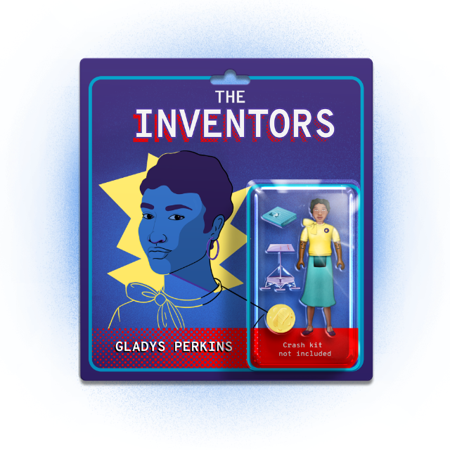

Subscribe to the podcast to receive new episodes as soon as we release them
Season 6, Episode 7
Gladys Perkins: The Pioneer Who Took Us To New Heights

Is the moon made of cheese? Of course not. But can a person walk on the surface? Not too long ago, we couldn’t answer that question. But with the help of Gladys Perkins, we soon figured out that we could send a team to the moon and have them safely land on its surface.
There was a time when the United States was behind the Soviets in the space race. Everyone had their sights set on the moon. Andrew Chaikin describes NASA’s disastrous Ranger missions. Erik Conway explains how complicated the trajectory calculations were—and to top it all off, why they often couldn’t be done in advance. To succeed, NASA’s new Surveyor program would need the capability to adjust trajectory mid-flight. Gladys Perkins made those calculations possible. But her part in this story hasn’t been well documented. Our editor Kim Huang recounts how difficult it was to get details of her story. And Vahe Peroomian explains how important it is to get these histories told to inspire the next generation to take on moonshot projects.
00:01 - Neil Armstrong
That's one small step for man, one giant leap for mankind.
00:11 - Saron Yitbarek
It was 10:56 P.M. Eastern Time on July 20, 1969. Neil Armstrong placed his left foot on the dusty surface of the moon. More than 600 million people were watching that moment on their black-and-white televisions, fascinated by the culmination of the space race between the U.S. and the Soviet Union. But behind that one moment, that famously small step, there were many other steps that remained invisible to the millions watching Neil Armstrong. These were steps taken by heroes whose names have been almost lost to history. I'm Saron Yitbarek, and this is Command Line Heroes, an original podcast from Red Hat.
01:07 - Saron Yitbarek
You know, before Neil Armstrong and Buzz Aldrin could land on the moon, scientists, analysts, and computer engineers had to band together and learn how to plot a lunar trajectory—a flight path to the moon. And then, they had to figure out how to touch down without blowing everything up! Two pretty huge problems with life-and-death consequences for wrong answers. This is the story of the years of work that went into getting those answers right. Literally thousands of brilliant minds—at NASA and elsewhere — were bent toward this goal, and most of them never became famous.
01:50 - Saron Yitbarek
This whole season, we've been learning about heroes we barely knew, pioneers in science and technology who nudged humanity forward while staying out of the spotlight. And this time we're celebrating our most hard-to-find hero yet—an engineer named Gladys Perkins. Her work on lunar trajectories helped Neil Armstrong land on his feet. We were blown away when we learned about her achievements, especially when we thought about what it meant to be a Black woman working in a very white, very male field. And, at the same time, we were frustrated—because so much of Perkins' life and work seemed to have vanished from the history books. This is our attempt to write Gladys Perkins back into history. She wasn't in the top brass at NASA. She wasn't likely to be famous. And yet, she was just as much a part of this historical mission. This audacious plan where, with enough work and bright minds, we could send a person to the moon and bring them home again.
03:11 - Saron Yitbarek
Did you ever see that 1902 film “A Trip to the Moon” by George Méliès? Where the moon has an actual human face? A team of Victorian astronomers use a cannon to launch their rocket, and it basically smooshes into the lunar surface. Lucky shot. Well, in the earliest days of space exploration, that was basically the strategy. Take a rough sort of aim, fire, and cross your fingers. I'm exaggerating. But not by much.
03:48 - Andrew Chaikin
The first two Rangers, they never even made it into the proper orbits because the launch vehicle failed.
03:55 - Saron Yitbarek
Historian Andrew Chaikin walked us through NASA's early attempts to sidle up close to the moon. The Ranger Program started in 1960. Some called it “Shoot and Hope,” which might explain why they didn't put any humans on board.
04:13 - Andrew Chaikin
On the third Ranger mission, they had a single error in the sign of a number within the software that was programmed into the upper stage of the launch vehicle, the booster, that was supposed to correct the flight path on the way to the moon in what's called a mid-course correction. And that inverted sign reversed the mid-course correction parameters and caused the spacecraft to miss the moon entirely.
04:42 - Saron Yitbarek
So, that was Ranger 3.
04:44 - Andrew Chaikin
Ranger 4 failed because of a power short that took place when the spacecraft separated from its booster.
04:53 - Saron Yitbarek
Okay. That's Ranger 4.
04:55 - Andrew Chaikin
On Ranger 5, again, they lost power. So, it was a dead spacecraft.
05:02 - Saron Yitbarek
I'm kind of surprised they were still getting money for these things, but okay.
05:07 - Andrew Chaikin
And Ranger 6, one of the strangest failures of all.
05:13 - Saron Yitbarek
Geeze.
05:14 - Andrew Chaikin
What happened was that, when the booster rocket cut off as it was launching off the Earth and into space, there's a little bit of fuel and oxidizer, liquid oxygen and kerosene, that get released from the booster as it separates from the upper stage. And that ignited. And that created a cloud of plasma that enveloped the Ranger spacecraft and shorted out a crucial electrical connection. And once again, they had a dead TV camera. They went right up to the moon, but no pictures.
05:53 - Saron Yitbarek
So, at this point, NASA and their Jet Propulsion Laboratory are in trouble. The U.S. Congress starts investigating. Things are looking pretty bad, until finally...
06:06 - Andrew Chaikin
Ranger 7 succeeded, and so did Ranger 8 and Ranger 9.
06:11 - Saron Yitbarek
All those disasters weren't just disasters. They were multi-million dollar teachable moments. And the final three Ranger spacecraft were able to send back photos of the lunar surface. In fact, it was a TV signal broadcast back to Earth. The spacecraft flew closer and closer giving more and more accurate images of the surface until...
06:38 - Commander
Over.
06:43 - Saron Yitbarek
I forgot to mention, they still didn't know how to do what's called a “soft landing.” These were crash landings, but they were crash landings with a purpose.
06:54 - Andrew Chaikin
You could see tiny little craters and boulders and things. And you could start to get a handle on what the surface of the moon might be like if you tried to land on it. It was also an enormous leap in scientific understanding of the moon, because for the very first time, we could get a detailed look at how the lunar surface had evolved over the four and a half billion years of lunar history.
07:21 - Saron Yitbarek
It wasn't just a bit of scientific curiosity either. Detailed images of the surface were a crucial milestone in the plan to send humans to the moon. Those crash-landing Rangers had sent back images in their final moments that proved the moon surface was not just an enormous cloud of meteorite dust, but was firm enough to land on. Firm enough to walk on. And so, while the Soviets had been first to place a satellite in space in 1957, and even the first to send a human to space in 1961, the United States can now race toward a first of their own: the delivery of human beings to the moon.
08:10 - Saron Yitbarek
Before the Apollo Program could take Neil Armstrong on his legendary mission though, one more program was required. A series of soft landings—not crash landings—that NASA called the Surveyor Program. Now, the safe and soft landings that Surveyor crafts were meant to make couldn't just rely on the “shoot and hope” attitude of the Ranger Program. NASA was aiming for a little more finesse this time, and a crucial part of achieving that finesse was figuring out how to plot a lunar trajectory. Imagine for a second: you want to throw a ball of paper into a waste bin. Your brain is calculating the effect of gravity and your arm compensates, throwing the ball of paper so that gravity will finish the job. Okay. Now try tossing something 240,000 miles. That's the distance to the moon. And wait! There's not just one gravitational force you have to worry about. There's three.
09:20 - Andrew Chaikin
Physicists call it the three-body problem. You have the spacecraft being influenced not only by the gravity of the Earth, but by the gravity of the moon and the gravity of the sun. And, by the way, the Earth is not a perfect sphere. It's somewhat flattened at the poles. That has an effect. All of these things make this an extremely complex problem to solve.
09:47 - Saron Yitbarek
The calculations involved would push the computer technology of the 1960s to the brink. These were IBM mainframes running on punch cards. NASA's Jet Propulsion Lab did have a program that could simulate their trajectories. It was complex though, and took those 1960s computers a fair bit of time to process. Turns out, extra time was not something the Surveyor spacecraft were going to have.
10:18 - Erik Conway
So, you can't do all the calculations in advance.
10:22 - Saron Yitbarek
Erik Conway, the Jet Propulsion Lab’s historian, explained that NASA needed fast trajectory simulations because some of them would literally be done on the fly.
10:35 - Erik Conway
Since they had to do the mid-course correction between 15 and 20 hours after launch, that put a hard time frame on how fast they had to get it all done in order to send the corrections up to the spacecraft in time. That is, between 0 and 20 hours is when they had to get it all done. And the lunar trajectory is only 66 hours. So, you didn't have a lot of time to waste.
10:56 - Saron Yitbarek
Got that? Basically, new calculations had to be processed while this 20-hour mission is in progress. And, if you had to wait around for days for new trajectories, you'd miss the moon entirely. Somebody had to devise a way to streamline those trajectory simulations. And that somebody had a name.
11:20 - Kim Huang
Gladys Perkins.
11:21 - Saron Yitbarek
Kim Huang is a story editor here on the podcast. She was searching for new heroes we could celebrate when we started looking at the webpage for America's first Black sorority, the Alpha Kappa Alpha. Gladys West, our hero in episode two of this season, was a member of that sorority. A lot of America's accomplished Black women were. So, it seemed like a good place to start.
11:44 - Kim Huang
I was asked to do a little bit more research into the organization to see if there were individuals working in technology that had gone kind of unrecognized. And, for the first thing I did, obviously I went to the sorority website. I found one small listing, no picture, of a Gladys Franklin Perkins. And underneath, it was like basically one sentence. It says she was an aerospace engineer, and that she worked on the computer programming aspect of lunar trajectory for landing on the moon.
12:20 - Saron Yitbarek
Huang knew she had something, but the road led to a dead end.
12:25 - Kim Huang
And I remember seeing that and being really... just one sentence bio that kind of blows you away. And I put that into my report. And I remember sending my document to my managing editor and saying, "This is something really big. I think that we should probably look into this a little bit more."
12:46 - Saron Yitbarek
We were able to unearth just a rough idea of Perkins' early life. There was a lot of missing information, but here's what we know. She was born around 1921 in Crenshaw, Mississippi, a town of 500. Later, Gladys Perkins attended LeMoyne-Owen College in Memphis, Tennessee, where she joined the Alpha Kappa Alpha sorority and earned a degree in mathematics, likely the only woman in her class. Then, before her 30th birthday, she was working as a mathematician at NACA, the precursor to NASA. By 1955, she became the first black woman to be an associate engineer at Lockheed Missile Systems. And then, we find her at Hughes Aircraft in 1957 in Los Angeles. And it was there, at Hughes Aircraft, where Gladys Perkins would be instrumental in getting Neil Armstrong to the moon safely. Because this woman, with the unlikely life trajectory, was about to help improve lunar trajectories for NASA.
14:00 - Erik Conway
So, the lunar Surveyor Program was dictated by NASA to be outsourced completely to Hughes. And JPL was supposed to do nothing but monitor them.
14:11 - Saron Yitbarek
It's common, even today, for NASA to outsource elements to private companies. But, as Erik Conway points out, they were asking for a bit much this time.
14:22 - Erik Conway
Hughes had never built a planetary spacecraft. And so, what wound up happening is some JPL engineers went to Hughes and helped them. And some Hughes people came to JPL and learned this trajectory stuff from us, and then went back in and adapted it.
14:39 - Saron Yitbarek
So, we know those trajectory simulations needed to run fast, much faster than the programs JPL already had. And yet, they also needed to be elegant and complex, taking into account not just the three-body problem, but also the oblate shape of the Earth. Trajectories had to be devised for both direct injections—shooting straight for the moon, and also “parking orbits”—where you cruise around the Earth before carrying on to the moon. The folks at Hughes were responsible for developing the software that would run those calculations. Hughes staff would even be there at JPL Space Flight Operations Center during the flights. Gladys Perkins worked with engineer Paul Wong to make that simulation program workable. Erik Conway told us a bit more about what was needed compared to what JPL actually had.
15:40 - Erik Conway
The JPL navigation program was developed to cover the whole solar system. And so, it had to take into account the gravitational fields of all of the planets in greater precision. So, the program JPL developed was computationally very intensive. And we had done a mission to Venus by then. We'd done a mission to Mars by then. And you simply have more time to make those calculations.
16:09 - Saron Yitbarek
But remember, Hughes had to deliver software that produced answers during a much quicker trip to the moon. Here is Conway's take on how they solved the problem.
16:20 - Erik Conway
The methodology they used was a simplified method that actually was developed for figuring out the orbits of comets in an era in which no computers existed at all. So, it was capable of working this out without the computational resources that existed, even in the '60s, it could therefore be done within the computing time they had. Given, again, they had about a 15-hour deadline to get it all done before they had to send it to the spacecraft in flight.
16:52 - Saron Yitbarek
What he's describing there—the old methodology for tracking comets—it's called the Yankee Method. There was a certain brilliance that Gladys Perkins and Paul Wong displayed when they look to the past for a solution to such a futuristic problem.
17:12 - Speaker 6
Surveyor is reporting in excellent condition. All signals look good. 4,000 feet, stable.
17:18 - Saron Yitbarek
Between 1966 and 1968, 7 unoccupied Surveyor spacecraft traveled to the moon. Thanks in no small part to those trajectory simulations, 5 of them were able to soft land on the lunar surface.
17:36 - Saron Yitbarek
And that made possible a slew of engineering experiments, photographs, and tests to see if the lunar surface really could bear the weight of further arrivals, and human footsteps. So, at long last, after 5 years of Ranger missions and 3 years of Surveyor missions—8 years of crashes, misses, and rocky landings—NASA was finally confident they could send humans to the moon and bring them back.
18:09 - Neil Armstrong
One small step.
18:13 - Saron Yitbarek
Behind the iconic moment that all this labor was leading up to, behind that one monumental television experience, there were countless workers bringing their heart and soul to the task. You always have huge teams laboring behind the scenes when the mission is so big. But Gladys Perkins was something else. Here was a Black woman coming up through the ranks in the 1950s and '60s, almost always the only person who looked like her in the room. For our story editor, Kim Huang, Gladys Perkins' invisibility needed to be called out.
18:53 - Kim Huang
A lot of the roles that Black women played in tech have been historically downplayed. We have the Hidden Figures being a big example of that. We have Gladys West just coming to prominence now in her nineties as evidence to that.
19:09 - Saron Yitbarek
You can learn all about Gladys West, by the way, in episode two.
19:13 - Kim Huang
A lot of people think of Black women as having an affinity towards certain other things and not science and technology. I know that certainly things that we face, I face as a woman working in technology, that is something that has been in place for a long time.
19:32 - Saron Yitbarek
Huang and our producers hit roadblocks every step of the way trying to understand Perkins' life. We reached out to her Alma Mater—dead-end. We reached out to Hughes Aircraft—another dead end. We looked for answers at the church she used to attend, scavenging through local newspapers, an old engineering society she belonged to. We couldn't track down anyone who knew this woman who had helped put people on the moon.
20:03 - Kim Huang
It seems strange to me that there's so much historical documentation. Companies have paid to do their own archives and their own historical documentation. NASA has its own historical outfit that does all of this work. But still, despite all of those efforts, a lot of people get left out, maybe because the perception that their role is not important. I would argue that it may be a bias where a lot of people, especially Black and Indigenous people of color, get left out of the story because there's not an affinity there. Like the affinity bias tells us that Black people doing this kind of work should kind of be thankful that they have a job or be thankful that they're just a part of this thing, a small part of this bigger thing, even though their part is not very small at all. And I think that that influences what kind of history gets told, and what does not get told, and what kind of gets lost.
21:07 - Saron Yitbarek
While we were able to confirm Gladys Perkins' contributions, there was, in fact, no official record of her work at NASA's JPL, no record in NASA's archives about any person called Gladys Perkins who worked on the Surveyor Program. For Huang, that means more work needs to be done centering the contributions of Black women in the history of science and tech.
21:32 - Kim Huang
It's important for Black youth, first of all, to see what the possibilities really are. There are a lot of persistent beliefs about Black achievement having a bias towards certain areas, like entertainment or sports, more so than they do things like technology and mathematics. It's not really seen as an area where Black people can excel.
21:57 - Saron Yitbarek
Margot Lee Shetterly's book, Hidden Figures, about other black women who worked at NASA during the space race inspired us as we worked to uncover Gladys Perkins' story. But it can't be a one-off. There's a whole history to discover.
22:13 - Kim Huang
I want people to know Gladys Perkins and what she did. I want to be able to look at a book one day and see her name in it. And it gets kind of scary because, when you think about this one person, how many other people have we lost in this way? How much more history have we lost?
22:35 - Saron Yitbarek
This episode, and in fact, this whole season of Command Line Heroes, has been part of our commitment to stopping that loss, to keep names and faces from fading away. And not just because history matters for its own sake, but because the details of history have a way of sending our future dreams on a trajectory all their own. The Space Race that Gladys Perkins experienced has been echoing in today's race towards Mars.
23:12 - Vahe Peroomian
Some of the stakes are exactly the same.
23:13 - Saron Yitbarek
Vahe Peroomian, professor of physics and astronomy at the University of Southern California, helped us see how NASA today has a similar mission to the one Gladys Perkins and her team were chasing.
23:27 - Vahe Peroomian
The question is, will NASA be the first on the surface of Mars or will it, for example, be SpaceX. There's also a chance that China might get there, if we stumble too many times in our planning.
23:42 - Saron Yitbarek
When you're going to Mars, the trajectory calculations are more complex. Mars has an atmosphere, for starters, which means you need heat shields. But it doesn't have enough atmosphere that you can rely on aerobraking. So, you're doing a power dissent, which makes things even more difficult. And also, you know, Mars is really far away.
24:09 - Vahe Peroomian
Going directly to Mars and landing on its surface without entering orbit first is like taking a basketball here in L.A., having your net be somewhere in New York, and the net is moving away from you at about three kilometers per second, and you shoot the basketball and you swish it without hitting anything else. So, that's how complicated it is literally to land something on Mars.
24:33 - Saron Yitbarek
But here is what the Mars mission and the moon mission have in common. Just like in the 1960s, today's race towards Mars is about inspiring the next generation.
24:48 - Vahe Peroomian
Millions of schoolchildren in the 1960s and '70s were inspired by the landing on the moon. I was only 4 years old when the first moon landing happened and I became a scientist, I became a physicist, driven by those moon landings. And I think a successful Mars mission would go a really long way towards inspiring the next generation of scientists and engineers.
25:12 - Saron Yitbarek
That inspiration can map out a whole new horizon for people, and it can help everybody believe a little more in the power of science.
25:22 - Vahe Peroomian
What a long way that's going to go to returning science to the forefront of our thoughts, something that's really missing nowadays from public discourse. And I'm really hoping that in the next decade, as we return back to the moon and go to Mars, that that will change and we will become a more scientifically literate population.
25:45 - Saron Yitbarek
That kind of cultural change doesn't rely, in the end, on one man stepping on the moon. It relies on all the thousands of Gladys Perkins doing the work behind the scenes that got them there.
25:59 - Andrew Chaikin
When you watch Neil Armstrong step off the moon on that historic evening of July 20, 1969, and you see he is a little tentative.
26:14 - Neil Armstrong
Very fine-grained as you get close to it. It's almost like a powder.
26:14 - Saron Yitbarek
Andrew Chaikin saw something that a lot of people missed in that broadcast.
26:19 - Andrew Chaikin
He puts his foot down. He tests his weight. He's still holding onto the lander. He's dragging his foot back and forth through the dust to kind of gauge its properties. And then, he puts both feet on the moon while he's still holding on. And then, finally he lets go and he stands on the surface of the moon and starts to walk around.
26:39 - Neil Armstrong
It has a stark beauty all its own.
26:44 - Saron Yitbarek
Think of the confidence you have to have to take that step, confidence in the engineers, the coders, the technicians who all made that moment happen.
27:01 - Saron Yitbarek
Gladys Perkins died in 1999 at the close of the century that she helped define. We found her obituary in the Los Angeles Sentinel, a historical Black newspaper that still publishes today. And we were able to trace through a few other clues of how a Black woman born during segregation went on to be a key player in one of humanity's most noble endeavors, thanks in part to Black newspapers throughout the country who shined a light on their community when nobody else did. It's truly inspiring. But we still need to know so much more about this pioneer. Here is Kim Huang again with a special request.
27:45 - Kim Huang
If you have any information about Gladys Patricia Perkins, please contact the Command Line Heroes team. I would be more than thrilled to find out more about this amazing person. I feel really connected emotionally to this story, and I'm really thankful for the opportunity to work on it.
28:07 - Saron Yitbarek
All the details we're able to find will be collected for you to explore at redhat.com/commandlineheroes. Next time, it's our season finale. And we're going to meet one of my personal heroes, a woman who transformed the world of venture capital and brought new levels of opportunity to Silicon Valley. Arlan Hamilton. Until then, I'm Saron Yitbarek, and this is Command Line Heroes, an original podcast from Red Hat. Keep on coding.